🐙 方舟动物园：海洋世界
Ark Nova: Marine Worlds · 扩展规则书 · 设计：Mathias Wigge · 游人码头简体中文版（官方中文规则书全文转录，含 8 页术语表）
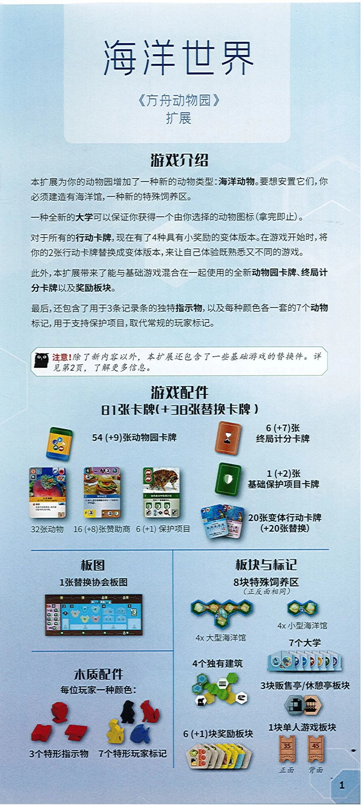
本页整理自微信公众号「桌游怎么玩」《方舟动物园，海洋世界，扩展，术语表【桌游规则】》发布的《方舟动物园：海洋世界》(Ark Nova: Marine Worlds) 扩展官方中文规则书（游人码头简体中文版，©2023 Feuerland，全书 16 页扫描），逐页全文转录，原书扫描图随文嵌入——点击任意图片即可放大查看。规则内容归 Feuerland Verlagsgesellschaft、游人码头及版权方所有，转录仅供个人学习查阅。
整理说明：本扩展规则书共 8 页正文（扫描图 1–8），随书另附《术语表/图标概览》8 页（扫描图 9–16，对应书内页码 1–8），一并全文收录。配件总数经加和自洽：81 张卡牌 = 动物园 54 + 终局计分 6 + 基础保护项目 1 + 变体行动 20；38 张替换卡牌 = 9 + 7 + 2 + 20。原书笔误与生硬句照录：「直到每次休息，仅有一位玩家能获得全新的大学」（疑为"下次休息"），「不再像等级I那面」，「如果这导致你余下的建筑彼此分开是允许的。」（两处），「呈现有灰色背景」等。被基础替换的 18 张卡牌编号（001–262）逐张放大核对无误。游人码头官译用语照录（「海洋馆」「珊瑚住客」「海浪图标」「特形指示物」「泛用大学」「轮抽」等）。〔图 …〕说明为整理所拟。
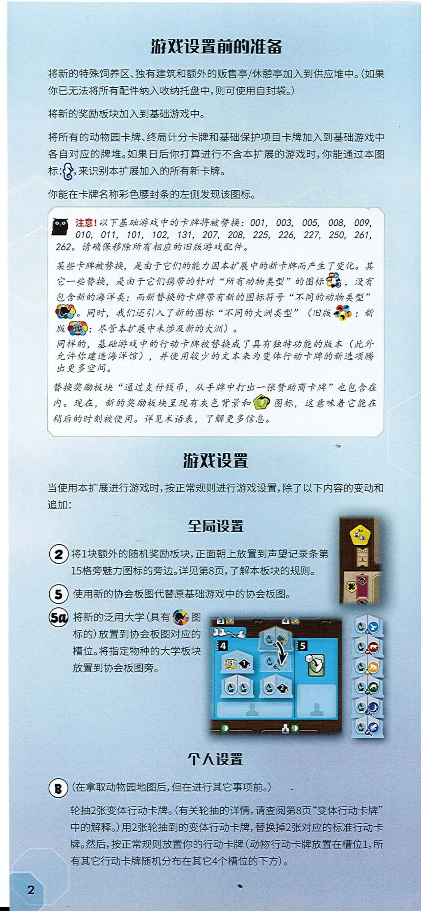
游戏设置前的准备
将新的特殊饲养区、独有建筑和额外的贩售亭/休憩亭加入到供应堆中。（如果你已无法将所有配件纳入收纳托盘中，则可使用自封袋。）
将新的奖励板块加入到基础游戏中。
将所有的动物园卡牌、终局计分卡牌和基础保护项目卡牌加入到基础游戏中各自对应的牌堆。如果日后你打算进行不含本扩展的游戏时，你能通过本图标：〔图 海马图标〕，来识别本扩展加入的所有新卡牌。
你能在卡牌名称彩色腰封条的左侧发现该图标。
〔图 猫头鹰图标〕注意！以下基础游戏中的卡牌将被替换：001，003，005，008，009，010，011，101，102，131，207，208，225，226，227，250，261，262。请确保移除所有相应的旧版游戏配件。
某些卡牌被替换，是由于它们的能力因本扩展中的新卡牌而产生了变化。其它一些替换，是由于它们携带的针对“所有动物类型”的图标〔图 多个彩色动物头环形图标〕，没有包含新的海洋类；而新替换的卡牌带有新的图标符号“不同的动物类型”〔图 黑白大象图标〕。同时，我们还引入了新的图标“不同的大洲类型”（旧版〔图 彩色动物头环形图标〕；新版〔图 地球仪图标〕：尽管本扩展中未涉及新的大洲）。
同样的，基础游戏中的行动卡牌被替换成了具有独特功能的版本（此外允许你建造海洋馆），并使用较少的文本来为变体行动卡牌的新选项腾出更多空间。
替换奖励板块“通过支付钱币，从手牌中打出一张赞助商卡牌”也包含在内。现在，新的奖励板块呈现有灰色背景和〔图 黄绿色五边形盾牌图标〕图标，这意味着它能在稍后的时刻被使用。详见术语表，了解更多信息。
游戏设置
当使用本扩展进行游戏时，按正常规则进行游戏设置，除了以下内容的变动和追加：
全局设置
② 将1块额外的随机奖励板块，正面朝上放置到声望记录条第15格旁魅力图标的旁边。详见第8页，了解本板块的规则。
〔图 声望记录条第15格附近放置奖励板块的照片〕
⑤ 使用新的协会板图代替原基础游戏中的协会板图。
5a 将新的泛用大学（具有〔图 黑白大象彩色环图标〕图标的）放置到协会板图对应的槽位。将指定物种的大学板块放置到协会板图旁。
〔图 协会板图大学槽位摆放照片，展示4、5号槽位及右侧大学板块堆〕
个人设置
B （在拿取动物园地图后，但在进行其它事项前。）
轮抽2张变体行动卡牌。（有关轮抽的详情，请查阅第8页“变体行动卡牌”中的解释。）用2张轮抽到的变体行动卡牌，替换掉2张对应的标准行动卡牌。然后，按正常规则放置你的行动卡牌（动物行动卡牌放置在槽位1，所有其它行动卡牌随机分布在其它4个槽位的下方）。
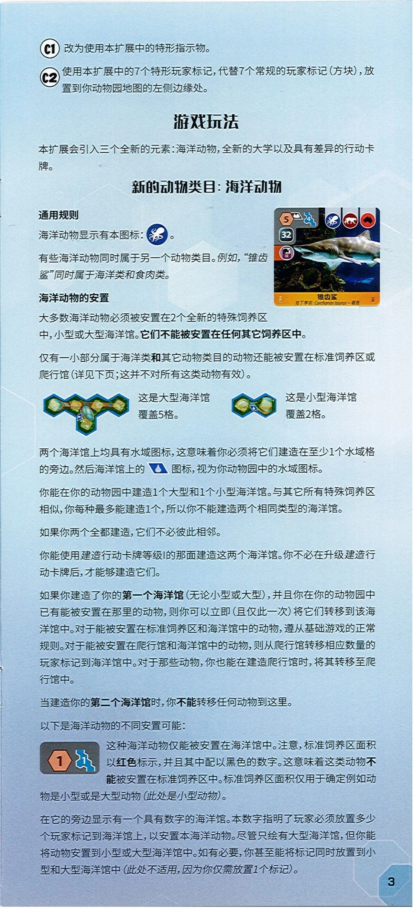
C1 改为使用本扩展中的特形指示物。
C2 使用本扩展中的7个特形玩家标记，代替7个常规的玩家标记（方块），放置到你动物园地图的左侧边缘处。
游戏玩法
本扩展会引入三个全新的元素：海洋动物，全新的大学以及具有差异的行动卡牌。
新的动物类目：海洋动物
通用规则
海洋动物显示有本图标：〔图 蓝色圆形内白色章鱼图案的图标〕。
有些海洋动物同时属于另一个动物类目。例如，"锥齿鲨"同时属于海洋类和食肉类。
〔图 海洋动物卡牌示例"锥齿鲨"，卡左上为橙色六边形数字5与蓝色饲养区图形（数字4）、黑色方块数字32，右上为海洋类/食肉类/澳洲类三个圆形图标，卡名为"锥齿鲨"，卡底印"拉丁学名： Carcharias taurus – 极危"〕
海洋动物的安置
大多数海洋动物必须被安置在2个全新的特殊饲养区中，小型或大型海洋馆。它们不能被安置在任何其它饲养区中。
仅有一小部分属于海洋类和其它动物类目的动物还能被安置在标准饲养区或爬行馆（详见下页；这并不对所有这类动物有效）。
〔图 大型海洋馆版图示例（5格六边形板块拼成）〕这是大型海洋馆 覆盖5格。
〔图 小型海洋馆版图示例（2格六边形板块拼成）〕这是小型海洋馆 覆盖2格。
两个海洋馆上均具有水域图标，这意味着你必须将它们建造在至少1个水域格的旁边。然后海洋馆上的〔图 蓝色平行四边形内白色水滴图标〕图标，视为你动物园中的水域图标。
你能在你的动物园中建造1个大型和1个小型海洋馆。与其它所有特殊饲养区相似，你每种最多能建造1个，所以你不能建造两个相同类型的海洋馆。
如果你两个全都建造，它们不必彼此相邻。
你能使用建造行动卡牌等级1的那面建造这两个海洋馆。你不必在升级建造行动卡牌后，才能够建造它们。
如果你建造了你的第一个海洋馆（无论小型或大型），并且你在你的动物园中已有能被安置在那里的动物，则你可以立即（且仅此一次）将它们转移到该海洋馆中。对于能被安置在标准饲养区和海洋馆中的动物，遵从基础游戏的正常规则。对于能被安置在爬行馆和海洋馆中的动物，则从爬行馆转移相应数量的玩家标记到海洋馆中。对于那些动物，你也能在建造爬行馆时，将其转移至爬行馆中。
当建造你的第二个海洋馆时，你不能转移任何动物到这里。
以下是海洋动物的不同安置可能：
〔图 示例图标——红色六边形内数字"1"，旁为蓝色饲养区图形（内有数字1）〕这种海洋动物仅能被安置在海洋馆中。注意，标准饲养区面积以红色标示，并且其中配以黑色的数字。这意味着这类动物不能被安置在标准饲养区中。标准饲养区面积仅用于确定例如动物是小型或是大型动物（此处是小型动物）。
在它的旁边显示有一个具有数字的海洋馆。本数字指明了玩家必须放置多少个玩家标记到海洋馆上，以安置本海洋动物。尽管只绘有大型海洋馆，但你能将动物安置到小型或大型海洋馆中。如有必要，你甚至能将标记同时放置到小型和大型海洋馆中（此处不适用，因为你仅需放置1个标记）。
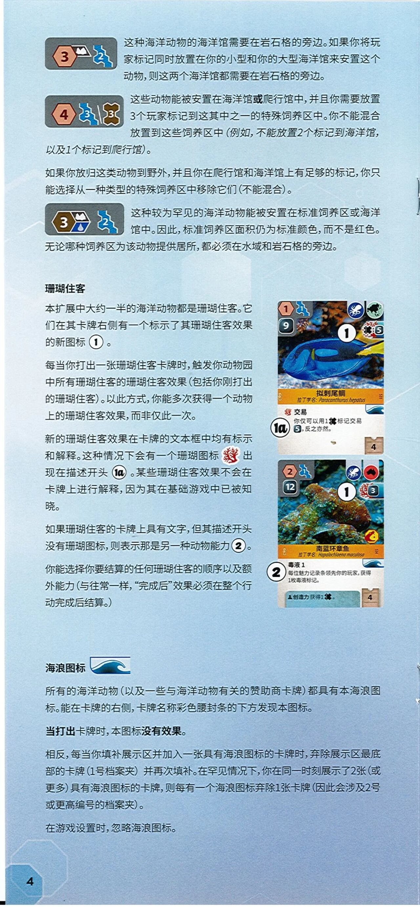
〔图 示例图标——橙色六边形内数字"3"+岩石图标+蓝色饲养区图形（内数字2）〕这种海洋动物的海洋馆需要在岩石格的旁边。如果你将玩家标记同时放置在你的小型和你的大型海洋馆来安置这个动物，则这两个海洋馆都需要在岩石格的旁边。
〔图 示例图标——橙色六边形内数字"4"+蓝色饲养区图形（内数字3）/棕色饲养区图形（内数字3）〕这些动物能被安置在海洋馆或爬行馆中，并且你需要放置3个玩家标记到这其中之一的特殊饲养区中。你不能混合放置到这些饲养区中（例如，不能放置2个标记到海洋馆，以及1个标记到爬行馆）。
如果你放归这类动物到野外，并且你在爬行馆和海洋馆上有足够的标记，你只能选择从一种类型的特殊饲养区中移除它们（不能混合）。
〔图 示例图标——棕色六边形内数字"3"+岩石/水域图标+蓝色饲养区图形（内数字2）〕这种较为罕见的海洋动物能被安置在标准饲养区或海洋馆中。因此，标准饲养区面积仍为标准颜色，而不是红色。
无论哪种饲养区为该动物提供居所，都必须在水域和岩石格的旁边。
珊瑚住客
本扩展中大约一半的海洋动物都是珊瑚住客。它们在其卡牌右侧有一个标示了其珊瑚住客效果的新图标〔图 白色圆形圈内数字"1"的标记〕。
每当你打出一张珊瑚住客卡牌时，触发你动物园中所有珊瑚住客的珊瑚住客效果（包括你刚打出的珊瑚住客）。以此方式，你能多次获得一个动物上的珊瑚住客效果，而非仅此一次。
〔图 卡牌示例"拟刺尾鲷"，橙色腰封条印卡名"拟刺尾鲷"与"拉丁学名： Paracanthurus hepatus"；卡左上为橙色六边形数字1、蓝色饲养区图形（数字1）、黑色方块数字9；右上为蓝色章鱼（海洋类）图标与一枚深绿色圆形大陆图标；右侧中部为红色珊瑚图标配深色方块数字5；白色圆形"1"标记覆盖在卡图上；文本框：〔珊瑚图标〕交易——你仅可以用1〔图 黑色十字形（四瓣花形）标记图标〕标记交易〔图 深色圆角方块数字5〕，反之亦然。；描述开头左侧有"1a"白色圆形标记；文本框右侧有海浪图标；右下角档案夹样式方框数字4〕
新的珊瑚住客效果在卡牌的文本框中均有标示和解释。这种情况下会有一个珊瑚图标〔图 红色珊瑚图标〕出现在描述开头〔图 白色圆形圈内"1a"的标记〕。某些珊瑚住客效果不会在卡牌上进行解释，因为其在基础游戏中已被知晓。
如果珊瑚住客的卡牌上具有文字，但其描述开头没有珊瑚图标，则表示那是另一种动物能力〔图 白色圆形圈内数字"2"的标记〕。
你能选择你要结算的任何珊瑚住客的顺序以及额外能力（与往常一样，"完成后"效果必须在整个行动完成后结算。）
〔图 卡牌示例"南蓝环章鱼"，橙色腰封条印卡名"南蓝环章鱼"与"拉丁学名： Hapalochlaena maculosa"；卡左上为橙色六边形数字2、蓝色饲养区图形（数字1）、黑色方块数字12；右上为蓝色章鱼（海洋类）图标与红色圆形澳洲大陆图标；右侧中部为红色珊瑚图标配深色方块数字3；白色圆形"1"标记覆盖在卡图上，卡图右下另有红黄色动物能力图标；文本框：毒液 1——每位魅力记录条领先你的玩家，获得1枚毒液标记。以及〔人形图标〕创造力 获得1〔图 黑色十字形（四瓣花形）标记图标〕。；文本框右侧有海浪图标；右下角档案夹样式方框数字4〕
海浪图标 〔图 蓝色海浪图标〕
所有的海洋动物（以及一些与海洋动物有关的赞助商卡牌）都具有本海浪图标。能在卡牌的右侧，卡牌名称彩色腰封条的下方发现本图标。
当打出卡牌时，本图标没有效果。
相反，每当你填补展示区并加入一张具有海浪图标的卡牌时，弃除展示区最底部的卡牌（1号档案夹）并再次填补。在罕见情况下，你在同一时刻展示了2张（或更多）具有海浪图标的卡牌，则每有一个海浪图标弃除1张卡牌（因此会涉及2号或更高编号的档案夹）。
在游戏设置时，忽略海浪图标。
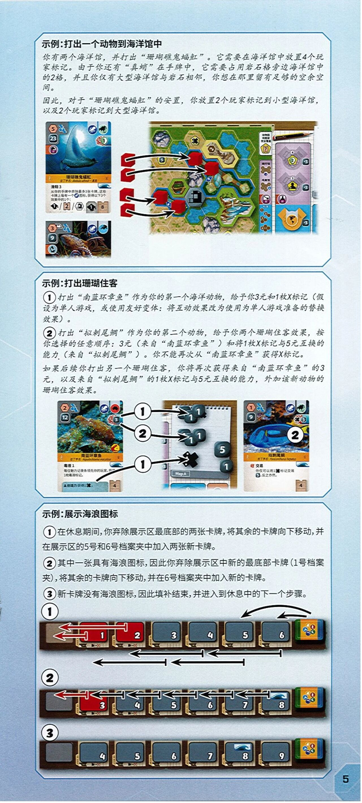
示例：打出一个动物到海洋馆
你有两个海洋馆，并打出"珊瑚礁鬼蝠魟"。它需要在海洋馆中放置4个玩家标记。由于你还有"真蛸"在手牌中，它需要占用岩石格旁边海洋馆中的2格，并且你仅有大型海洋馆与岩石相邻，你想在那里留有足够的空余空间。
因此，对于"珊瑚礁鬼蝠魟"的安置，你放置2个玩家标记到小型海洋馆，以及2个玩家标记到大型海洋馆。
〔图 左侧为动物卡"珊瑚礁鬼蝠魟"(左上数字5、水域格数4、23，右上章鱼图标与大陆图标、珊瑚图标与1，海浪图标;能力"滑翔 3:从你的手牌中弃除最多3张卡牌，这些卡牌上每有一个〔章鱼〕图标，获得以下3个效果中的1个：1 / 2 / 〔建筑图标〕，另有数字1、8");其下方露出另一张动物卡的上半部（数字3、水域2、9，章鱼、乌贼与显微镜图标），名称条未入镜。右侧为游戏板照片，红色玩家标记以多支箭头示意分配到小型海洋馆与大型海洋馆的格位。〕
示例：打出珊瑚住客
① 打出"南蓝环章鱼"作为你的第一个海洋动物，给予你3元和1枚X标记（假设为单人游戏，或使用友好变体：将互动效果改为使用为单人游戏准备的替换效果）。
② 打出"拟刺尾鲷"作为你的第二个动物，给予你两个珊瑚住客效果，按你选择的任意顺序：3元（来自"南蓝环章鱼"）和将1枚X标记与5元互换的能力（来自"拟刺尾鲷"）。你不能再次从"南蓝环章鱼"获得X标记。
如果后续你打出另一个珊瑚住客，你将再次获得来自"南蓝环章鱼"的3元，以及来自"拟刺尾鲷"的1枚X标记与5元互换的能力，外加该新动物的珊瑚住客效果。
〔图 左侧为动物卡"南蓝环章鱼"(左上数字2、水域1、12，右上章鱼图标与澳大利亚图标、珊瑚图标与3，魅力图标;能力"毒液 1:每位魅力记录条领先你的玩家，获得1枚毒液标记。"，卡底部另有"创造力获得1〔图标被箭头遮挡〕。"条与数字4);中间为游戏板照片（标注Map A），有黑色X标记与数字块1、3，以①②①箭头示意效果结算去向;右侧为动物卡"拟刺尾鲷"(左上数字1、水域1、9，右上章鱼图标与大陆图标、红色图标与5，海浪图标;能力"交易：你仅可以用1〔X标记〕交易〔5〕，反之亦然。"，数字4）。〕
示例：展示海浪图标
① 在休息期间，你弃除展示区最底部的两张卡牌，将其余的卡牌向下移动，并在展示区的5号和6号档案夹中加入两张新卡牌。
② 其中一张具有海浪图标，因此你弃除展示区中新的最底部卡牌（1号档案夹），将其余的卡牌向下移动，并在6号档案夹中加入新的卡牌。
③ 新卡牌没有海浪图标，因此填补结束，并进入到休息中的下一个步骤。
〔图 三行展示区档案夹示意图：第①行档案夹编号1–6，带向左箭头与右上方的两支弧形补牌箭头;第②行编号3–8(编号3为红色被弃卡），带多支向左箭头;第③行编号4–9(其中8号卡处绘有海浪图标);最右端为卡牌补充库。〕
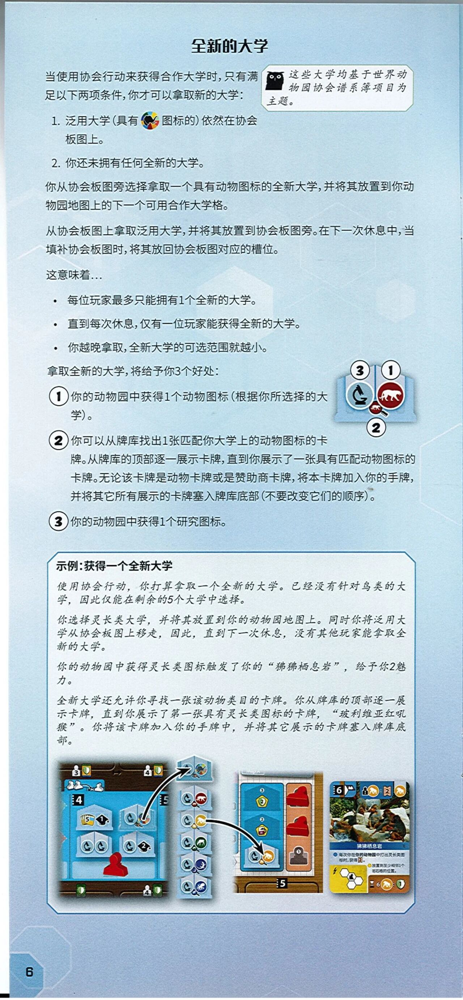
全新的大学
当使用协会行动来获得合作大学时，只有满足以下两项条件，你才可以拿取新的大学：
(右侧猫头鹰边注：这些大学均基于世界动物园协会谱系簿项目为主题。)
1. 泛用大学（具有〔彩色圆形底、黑色动物剪影〕图标的）依然在协会板图上。
2. 你还未拥有任何全新的大学。
你从协会板图旁选择拿取一个具有动物图标的全新大学，并将其放置到你动物园地图上的下一个可用合作大学格。
从协会板图上拿取泛用大学，并将其放置到协会板图旁。在下一次休息中，当填补协会板图时，将其放回协会板图对应的槽位。
这意味着…
- 每位玩家最多只能拥有1个全新的大学。
- 直到每次休息，仅有一位玩家能获得全新的大学。〔原文如此〕
- 你越晚拿取，全新大学的可选范围就越小。
拿取全新的大学，将给予你3个好处：
① 你的动物园中获得1个动物图标（根据你所选择的大学）。
② 你可以从牌库找出1张匹配你大学上的动物图标的卡牌。从牌库的顶部逐一展示卡牌，直到你展示了一张具有匹配动物图标的卡牌。无论该卡牌是动物卡牌或是赞助商卡牌，将本卡牌加入你的手牌，并将其它所有展示的卡牌塞入牌库底部（不要改变它们的顺序）。
③ 你的动物园中获得1个研究图标。
〔图 新大学板块示意图——上方两格分别标"3"(内有显微镜图标）与"1"(内有红色动物图标），下方一格标"2"。〕
示例：获得一个全新大学
使用协会行动，你打算拿取一个全新的大学。已经没有针对鸟类的大学，因此仅能在剩余的5个大学中选择。
你选择灵长类大学，并将其放置到你的动物园地图上。同时你将泛用大学从协会板图上移走，因此，直到下一次休息，没有其他玩家能拿取全新的大学。
你的动物园中获得灵长类图标触发了你的"狒狒栖息岩"，给予你2魅力。
全新大学还允许你寻找一张该动物类目的卡牌。你从牌库的顶部逐一展示卡牌，直到你展示了第一张具有灵长类图标的卡牌，"玻利维亚红吼猴"。你将该卡牌加入你的手牌中，并将其它展示的卡牌塞入牌库底部。
〔图 左侧为动物园地图板照片（红色玩家标记、多个大学格，左上数字3、4，左下数字1），箭头指向一列大学板块（含显微镜与各种动物图标);中间为协会板图与牌库照片（红色合作大学板块、槽位，数字5），箭头指向牌库;右侧为卡牌"狒狒栖息岩"(左上角数字6，能力"每次你在你的动物园中打出灵长类图标时，获得〔2魅力〕。""放置到至少相邻1个岩石格的位置。"，左下为带闪电与岩石格的黄色区域，右下为沙漏6、狒狒图标与盾牌1）。〕
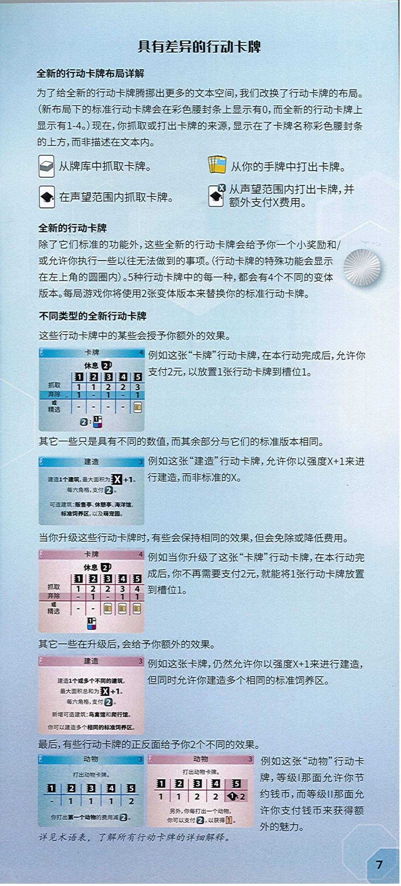
具有差异的行动卡牌
全新的行动卡牌布局详解
为了给全新的行动卡牌腾挪出更多的文本空间，我们改换了行动卡牌的布局。（新布局下的标准行动卡牌会在彩色腰封条上显示有0，而全新的行动卡牌上显示有1-4。）现在，你抓取或打出卡牌的来源，显示在了卡牌名称彩色腰封条的上方，而非描述在文本内。
〔图 四个图标说明，两列排布〕
- 〔牌库图标：一叠卡牌〕从牌库中抓取卡牌。
- 〔手牌图标：一把黄色卡牌〕从你的手牌中打出卡牌。
- 〔声望图标：白色卡牌内印黑色学士帽状图形〕在声望范围内抓取卡牌。
- 〔带"X"的声望图标〕从声望范围内打出卡牌，并额外支付X费用。
全新的行动卡牌
除了它们标准的功能外，这些全新的行动卡牌会给予你一个小奖励和/或允许你执行一些以往无法做到的事项。（行动卡牌的特殊功能会显示在左上角的圆圈内）。5种行动卡牌中的每一种，都会有4个不同的变体版本。每局游戏你将使用2张变体版本来替换你的标准行动卡牌。
〔图 页面右侧有一枚扇贝壳状装饰图〕
不同类型的全新行动卡牌
这些行动卡牌中的某些会授予你额外的效果。
〔图 蓝色"卡牌"行动卡牌示例，左上角为海马形小图标，标题"卡牌"右侧印"4"〕
- 卡牌 4
- 休息〔黑色杯形图标内印"2"〕
- 等级（黑底数字):1|2|3|4|5
- 抓取：1|1|2|2|3
- 弃除：1|-|1|-|1
- 或精选：-|-|-|-|〔卡牌小图标〕
- 卡牌底部：〔2〕：〔图标：小方框内印"1"，其下为蓝色与紫红色方块〕
例如这张"卡牌"行动卡牌，在本行动完成后，允许你支付2元，以放置1张行动卡牌到槽位1。
其它一些只是具有不同的数值，而其余部分与它们的标准版本相同。
〔图 蓝色"建造"行动卡牌示例，标题"建造"右侧印"3"〕
- 建造 3
- 建造1个建筑，最大面积为〔X〕+1。
- 每六角格，支付〔2〕。
- 可造建筑：贩售亭、休憩亭、海洋馆，标准饲养区，以及萌宠园。
例如这张"建造"行动卡牌，允许你以强度X+1来进行建造，而非标准的X。
当你升级这些行动卡牌时，有些会保持相同的效果，但会免除或降低费用。
〔图 红色"卡牌"行动卡牌示例（升级版），标题"卡牌"右侧印"4"〕
- 卡牌 4
- 休息〔黑色杯形图标内印"2"〕
- 等级（黑底数字):1|2|3|4|5
- 抓取：1|2|2|3|4
- 弃除：-|1|-|1|1
- 或精选：-|-|〔卡牌小图标〕|〔卡牌小图标〕|〔卡牌小图标〕
- 卡牌底部：〔图标：小方框内印"1"，其下为蓝色与紫红色方块〕
例如当你升级了这张"卡牌"行动卡牌，在本行动完成后，你不再需要支付2元，就能将1张行动卡牌放置到槽位1。
其它一些在升级后，会给予你额外的效果。
〔图 红色"建造"行动卡牌示例（升级版），标题"建造"右侧印"3"〕
- 建造 3
- 建造1个或多个不同的建筑，
- 最大面积总和为〔X〕+1。
- 每六角格，支付〔2〕。
- 新增可造建筑：鸟禽馆和爬行馆。
- 你可以建造多个相同的标准饲养区。
例如这张卡牌，仍然允许你以强度X+1来进行建造，但同时允许你建造多个相同的标准饲养区。
最后，有些行动卡牌的正反面给予你2个不同的效果。
〔图 两张"动物"行动卡牌正反面示例并排，左为蓝色面、右为红色面，标题均为"动物"，右侧均印"3"〕
蓝色面：
- 动物 3
- 打出动物卡牌。
- 等级（黑底数字):1|2|3|4|5
- 费用行：-|1|1|1|2
- 你打出第一个动物的费用减〔2〕。
红色面：
- 动物 3
- 打出动物卡牌。
- 等级（黑底数字):1|2|3|4|5(等级5整格以粉色底高亮)
- 费用行：1|1|2|2|〔黑色菱形（学士帽状）图标内印"1"〕2
- 另外，你每打出一个动物，你可以支付〔2〕，以获得〔1〕〔黄褐色票券状图标〕。
例如这张"动物"行动卡牌，等级I那面允许你节约钱币，而等级II那面允许你支付钱币来获得额外的魅力。
详见术语表，了解所有行动卡牌的详细解释。
〔页码：7〕
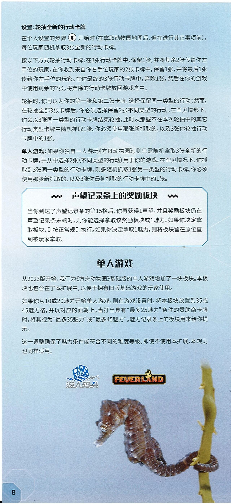
设置：轮抽全新的行动卡牌
在个人设置的步骤Ⓑ开始时（在拿取动物园地图后，但在进行其它事项前），每位玩家随机拿取3张全新的行动卡牌。
按以下方式轮抽行动卡牌：在3张行动卡牌中，保留1张，并将其余2张传给你左手位的玩家。在你收到来自你右手位玩家的2张卡牌中，保留1张，并将最后1张传给你左手位的玩家。在你最终的3张行动卡牌中，弃除1张，然后在你的游戏中使用剩余的2张。将弃除的行动卡牌放回游戏盒中。
轮抽时，你可以为你的第一张和第二张卡牌，选择保留同一类型的行动;然而，在轮抽全部3张卡牌后，你必须选择保留2张不同类型的行动。在罕见情形下，你会以3张同一类型的行动卡牌结束轮抽，此时从那些不在本次轮抽中的其它行动类型卡牌中随机抓取1张。你必须使用那张新抓取的，以及3张你轮抽行动卡牌中的1张。
单人游戏:如果你独自一人游玩《方舟动物园》，则只需随机拿取3张全新的行动卡牌，并从中选择2张（不同类型的行动）用于你的游戏。在罕见情况下，你抓取到3张同一类型的行动卡牌，则多随机抓取1张另一类型的行动卡牌。你必须使用那张新抓取的，以及3张你最初抓取的行动卡牌中的1张。
声望记录条上的奖励板块
〔图 蓝边方框栏目，标题两侧各有一串黑色六边形圆点组成的花纹装饰〕
当你到达了声望记录条的第15格后，你再获得1声望，并且奖励板块仍在声望记录条末端时，则你能选择拿取该奖励板块或1魅力〔原文如此〕。如果你决定拿取板块，则按正常规则执行。如果你决定拿取1魅力，则将板块留在原位直到被玩家拿取。
单人游戏
从2023版开始，我们为《方舟动物园》基础版的单人游戏增加了一块板块。本板块也包含在了本扩展中，以便于拥有旧版基础游戏的玩家使用。
如果你从10或20魅力开始单人游戏，则在游戏设置时，将本板块放置到35或45魅力格，并以对应的面朝上。当打出具有"最多25魅力"条件的赞助商卡牌时，将其视为"最多35魅力"或"最多45魅力"。魅力记录条上的板块用来给你提示。
这一调整确保了魅力条件能符合不同的难度等级。即使不使用本扩展，本规则也同样适用。
〔图 页面下方为"游人码头"(带骰子图案）标志与"FEUERLAND"标志，以及一张海马攀附海草的照片〕
〔页码：8〕
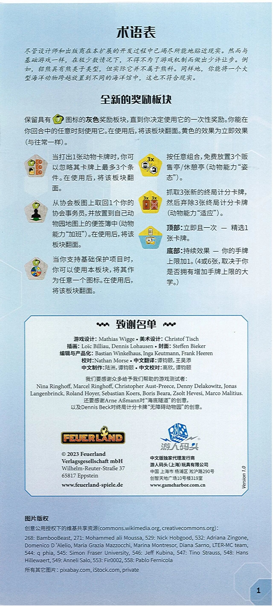
术语表
尽管设计师和出版商在本扩展的开发过程中已竭尽所能地贴近现实。然而与基础游戏一样，在极少数情况下，不得不为了游戏机制而做出少许让步。例如，貂熊具有熊类子类型，但实际它并不属于熊科。同样地，你能将一个大型海洋动物跨越放置到不同的海洋馆中，这也不符合现实。
全新的奖励板块
保留具有〔图 绿色六边形上带翻转箭头的图标〕图标的灰色奖励板块，直到你决定使用它的一次性奖励。你能在你回合中的任意时刻使用它。在使用后，将该板块翻面。黄色的效果为立即效果（与往常一样）。
〔图 灰色五边形奖励板块，上有一个事务员配三个"-1"图标的图示〕当打出1张动物卡牌时，你可以忽略其卡牌上最多3个条件。在使用后，将该板块翻面。
〔图 灰色五边形奖励板块，上有事务员人偶与绿色箭头的图示〕从协会板图上取回1个你的协会事务员，并放置到自己动物园地图上的便签簿中（动物能力"加班"）。在使用后，将该板块翻面。
〔图 灰色五边形奖励板块，上有彩色轮盘图标〕当你支持基础保护项目时，你可以使用本板块，将其作为任意一个图标。在使用后，将该板块翻面。
〔图 黄色六边形板块，上有"3x"与贩售亭/休憩亭图标的图示〕按任意组合，免费放置3个贩售亭/休憩亭（动物能力"姿态"）。
〔图 黄色六边形板块，上有"3x 3x"与两张终局计分卡牌（一张沙漏、一张红叉）的图示〕抓取3张新的终局计分卡牌，然后弃除3张终局计分卡牌（动物能力"适应"）。
〔图 黄蓝双色板块图标，上部为卡背、下部为"+1"手牌图示〕
顶部：立即且一次 — 精选1张卡牌。
底部：持续效果 — 你的手牌上限加1。（4或6张，取决于你是否拥有增加手牌上限的大学。)
致谢名单
游戏设计：Mathias Wigge • 美术设计：Christof Tisch
插画：Loïc Billiau, Dennis Lohausen • 封面：Steffen Bieker
编辑与产品化：Bastian Winkelhaus, Inga Keutmann, Frank Heeren
校对：Nathan Morse • 中文翻译：谭钧颐， 王昊添
中文制作：陆洲， 谭钧颐 • 中文校对：高欣， 谭钧颐
我们要感谢众多给予我们帮助的游戏测试者：
Nina Ringhoff, Marcel Ringhoff, Christopher Aust-Preece, Denny Delakowitz, Jonas Langenbrinck, Roland Hoyer, Sebastian Koers, Boris Beara, Zsolt Hevesi, Marco Malitius.
还要感谢Arne Aßmann对"海底隧道"的创意，
以及Dennis Beck对终局计分卡牌"无障碍动物园"的创意。
〔图 FEUERLAND 出版社标志〕 〔图 游人码头标志〕
© 2023 Feuerland
Verlagsgesellschaft mbH
Wilhelm-Reuter-Straße 37
65817 Eppstein
www.feuerland-spiele.de
中文版独家代理发行商
游人码头（上海）玩具有限公司
中国 上海市 杨浦区 淞沪路290号
创智天地广场10号楼319室
www.gameharbor.com.cn
（框右侧竖排：Version 1.0）
图片版权
创意公用授权下的维基共享资源（commons.wikimedia.org, creativecommons.org):
268: BambooBeast, 271: Mohammed ali Moussa, 529: Nick Hobgood, 532: Adriana Zingone, Domenico D 'Alelio〔原文如此：撇号前多一空格〕， Maria Grazia Mazzocchi, Marina Montresor, Diana Sarno, LTER-MC team, 544: q phia, 545: Simon Fraser University, 546: Jeff Kubina, 547: Tino Strauss, 548: Hans Hillewaert, 549: Anneli Salo, 553: Fir0002, 558: Pablo Fernicola
所有其它图片：pixabay.com, iStock.com, private
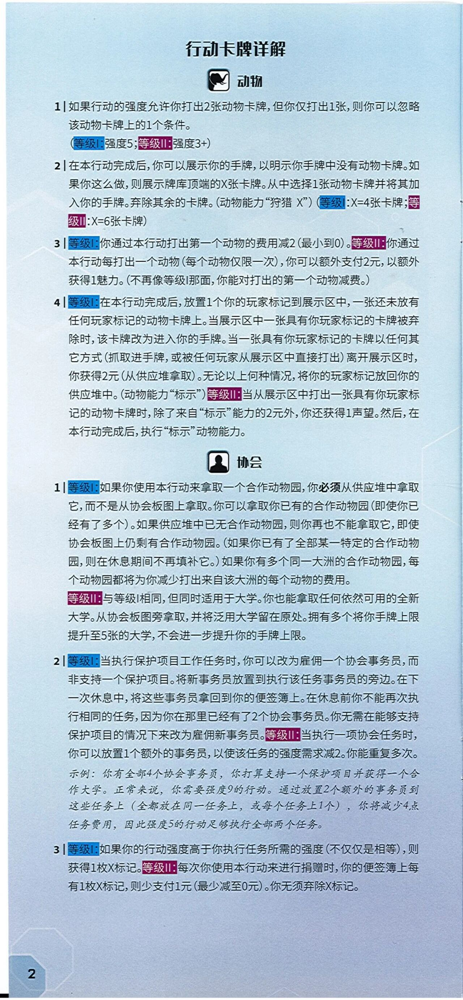
行动卡牌详解
动物
〔图 黑色动物头部图标〕
1｜如果行动的强度允许你打出2张动物卡牌，但你仅打出1张，则你可以忽略该动物卡牌上的1个条件。
（等级I: 强度5；等级II: 强度3+）
2｜在本行动完成后，你可以展示你的手牌，以明示你手牌中没有动物卡牌。如果你这么做，则展示牌库顶端的X张卡牌。从中选择1张动物卡牌并将其加入你的手牌。弃除其余的卡牌。（动物能力"狩猎 X"）（等级I: X=4张卡牌；等级II: X=6张卡牌)
3｜等级I: 你通过本行动打出第一个动物的费用减2 (最小到0）。等级II: 你通过本行动每打出一个动物（每个动物仅限一次），你可以额外支付2元，以额外获得1魅力。（不再像等级I那面，你能对打出的第一个动物减费。〔原文如此〕)
4｜等级I: 在本行动完成后，放置1个你的玩家标记到展示区中，一张还未放有任何玩家标记的动物卡牌上。当展示区中一张具有你玩家标记的卡牌被弃除时，该卡牌改为进入你的手牌。当一张具有你玩家标记的卡牌以任何其它方式（抓取进手牌，或被任何玩家从展示区中直接打出）离开展示区时，你获得2元（从供应堆拿取）。无论以上何种情况，将你的玩家标记放回你的供应堆中。（动物能力"标示"）等级II: 当从展示区中打出一张具有你玩家标记的动物卡牌时，除了来自"标示"能力的2元外，你还获得1声望。然后，在本行动完成后，执行"标示"动物能力。
协会
〔图 黑色人像图标〕
1｜等级I: 如果你使用本行动来拿取一个合作动物园，你必须从供应堆中拿取它，而不是从协会板图上拿取。你可以拿取你已有的合作动物园（即使你已经有了多个）。如果供应堆中已无合作动物园，则你再也不能拿取它，即使协会板图上仍剩有合作动物园。（如果你已有了全部某一特定的合作动物园，则在休息期间不再填补它。）如果你有多个同一大洲的合作动物园，每个动物园都将为你减少打出来自该大洲的每个动物的费用。
等级II: 与等级I相同，但同时适用于大学。你也能拿取任何依然可用的全新大学。从协会板图旁拿取，并将泛用大学留在原处。拥有多个将你手牌上限提升至5张的大学，不会进一步提升你的手牌上限。
2｜等级I: 当执行保护项目工作任务时，你可以改为雇佣一个协会事务员，而非支持一个保护项目。将新事务员放置到执行该任务事务员的旁边。在下一次休息中，将这些事务员拿回到你的便签簿上。在休息前你不能再次执行相同的任务，因为你在那里已经有了2个协会事务员。你无需在能够支持保护项目的情况下来改为雇佣新事务员。等级II: 当执行一项协会任务时，你可以放置1个额外的事务员，以使该任务的强度需求减2。你能重复多次。
示例：你有全部4个协会事务员，你打算支持一个保护项目并获得一个合作大学。正常来说，你需要强度9的行动。通过放置2个额外的事务员到这些任务上（全都放在同一任务上，或每个任务上1个），你将减少4点任务费用，因此强度5的行动足够执行全部两个任务。
3｜等级I: 如果你的行动强度高于你执行任务所需的强度（不仅仅是相等），则获得1枚X标记。等级II: 每次你使用本行动来进行捐赠时，你的便签簿上每有1枚X标记，则少支付1元（最少减至0元）。你无须弃除X标记。
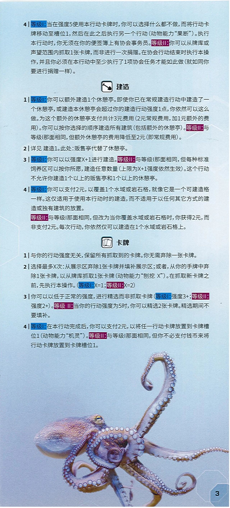
（本页为行动卡牌说明续，接上页第 4 条）
4 | 等级I: 当在强度5使用本行动卡牌时，你可以选择什么都不做，而将行动卡牌移动至槽位1，然后在此之后执行另一个行动（动物能力"果断"）。执行本行动时，你无须在你的便签簿上有协会事务员。等级II: 你可以从牌库或声望范围内抓取1张卡牌，而非进行一次捐赠。在协会行动结束时执行本操作，并且你必须在本行动中至少执行了1项协会任务才能如此做（就如同你要进行捐赠一样）。
建造
1 | 等级I: 你可以额外建造1个休憩亭。即使你已在常规建造行动中建造了一个休憩亭，或建造本休憩亭会超过你的建造行动强度1点，你依然可以这么做。为这个额外的休憩亭支付共计3元费用（2元常规费用，加1元额外的费用）。你可以按你选择的顺序建造所有建筑（包括额外的休憩亭）。等级II: 与等级I那面相同，但额外休憩亭的费用降低至2元（即常规费用）。
2 | 详见 建造1。此处： 贩售亭代替了休憩亭。
3 | 等级I: 你可以以强度X+1进行建造。等级II: 与等级I那面相同，但每种标准饲养区可以按你所愿，建造任意数量（上限为X+1强度依然生效）。这个行动不允许你建造1个以上的贩售亭和1个以上的休憩亭。
4 | 等级I: 你可以支付2元，以覆盖1个水域或岩石格，就像它是一个可建造格一样。这仅适用于使用本行动时的建造，而不适用于以任何其它方式的建造或独有建筑的放置。
等级II: 与等级I那面相同，但改为当你覆盖水域或岩石格时，你获得2元，而非支付2元。每次行动，你依然仅可以建造在1个水域或岩石格上。
卡牌
1 | 与你的行动强度无关，保留所有抓取到的卡牌。你无需弃除一张卡牌。
2 | 选择最多X次： 从展示区弃除1张卡牌并填补展示区；或者，从你的手牌中弃除1张卡牌，以从牌库抓取1张卡牌（动物能力"刨挖 X"）。在抓取新卡牌之前，先执行本操作。（等级I: X=1；等级II: X=2）
3 | 你可以以低于正常的强度，进行精选而非抓取卡牌（等级I: 强度3+；等级II: 强度2+）。等级 II: 当你的行动强度为5时，你可以精选2张卡牌。精选期间不要填补。
4 | 等级I: 在本行动完成后，你可以支付2元，以将任一行动卡牌放置到卡牌槽位1（动物能力"机灵"）。等级II: 与等级I那面相同，但你不必支付钱币来将行动卡牌放置到卡牌槽位1。
〔图 一只章鱼游动于浅蓝色海水中，占据页面下半部；右下角印有页码 3〕
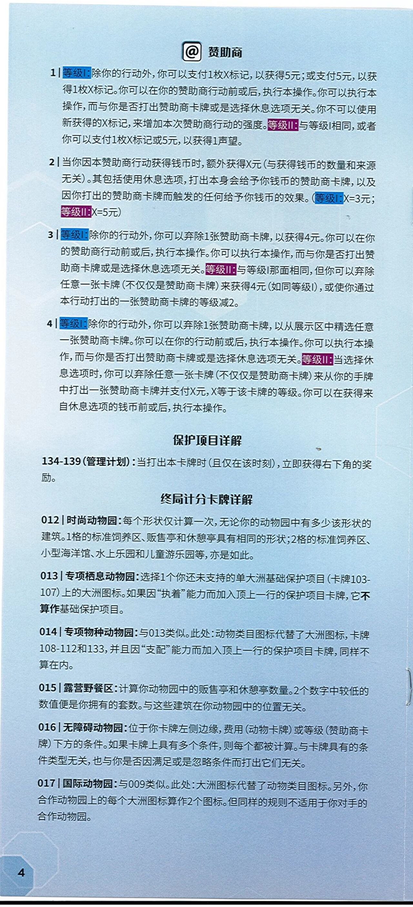
赞助商
1 | 等级I: 除你的行动外，你可以支付1枚X标记，以获得5元；或支付5元，以获得1枚X标记。你可以在你的赞助商行动前或后，执行本操作。你可以执行本操作，而与你是否打出赞助商卡牌或是选择休息选项无关。你不可以使用新获得的X标记，来增加本次赞助商行动的强度。等级II: 与等级I相同，或者你可以支付1枚X标记或5元，以获得1声望。
2 | 当你因本赞助商行动获得钱币时，额外获得X元（与获得钱币的数量和来源无关）。其包括使用休息选项，打出本身会给予你钱币的赞助商卡牌，以及因你打出的赞助商卡牌而触发的任何给予你钱币的效果。（等级I: X=3元；等级II: X=5元）
3 | 等级I: 除你的行动外，你可以弃除1张赞助商卡牌，以获得4元。你可以在你的赞助商行动前或后，执行本操作。你可以执行本操作，而与你是否打出赞助商卡牌或是选择休息选项无关。等级II: 与等级I那面相同，但你可以弃除任意一张卡牌（不仅仅是赞助商卡牌）来获得4元（如同等级I），或使你通过本行动打出的一张赞助商卡牌的等级减2。
4 | 等级I: 除你的行动外，你可以弃除1张赞助商卡牌，以从展示区中精选任意一张赞助商卡牌。你可以在你的行动前或后，执行本操作。你可以执行本操作，而与你是否打出赞助商卡牌或是选择休息选项无关。等级II: 当选择休息选项时，你可以弃除任意一张卡牌（不仅仅是赞助商卡牌）来从你的手牌中打出一张赞助商卡牌并支付X元，X等于该卡牌的等级。你可以在获得来自休息选项的钱币前或后，执行本操作。
保护项目详解
134-139（管理计划）： 当打出本卡牌时（且仅在该时刻），立即获得右下角的奖励。
终局计分卡牌详解
012 | 时尚动物园： 每个形状仅计算一次，无论你的动物园中有多少该形状的建筑。1格的标准饲养区、贩售亭和休憩亭具有相同的形状；2格的标准饲养区、小型海洋馆、水上乐园和儿童游乐园等，亦是如此。
013 | 专项栖息动物园： 选择1个你还未支持的单大洲基础保护项目（卡牌103-107）上的大洲图标。如果因"执着"能力而加入顶上一行的保护项目卡牌，它不算作基础保护项目。
014 | 专项物种动物园： 与013类似。此处： 动物类目图标代替了大洲图标，卡牌108-112和133，并且因"支配"能力而加入顶上一行的保护项目卡牌，同样不算在内。
015 | 露营野餐区： 计算你动物园中的贩售亭和休憩亭数量。2个数字中较低的数值便是你拥有的套数。与这些建筑在你动物园中的位置无关。
016 | 无障碍动物园： 位于你卡牌左侧边缘，费用（动物卡牌）或等级（赞助商卡牌）下方的条件。如果卡牌上具有多个条件，则每个都被计算。与卡牌具有的条件类型无关，也与你是否因满足或是忽略条件而打出它们无关。
017 | 国际动物园： 与009类似。此处： 大洲图标代替了动物类目图标。另外，你合作动物园上的每个大洲图标算作2个图标。但同样的规则不适用于你对手的合作动物园。
（左下角印有页码 4）
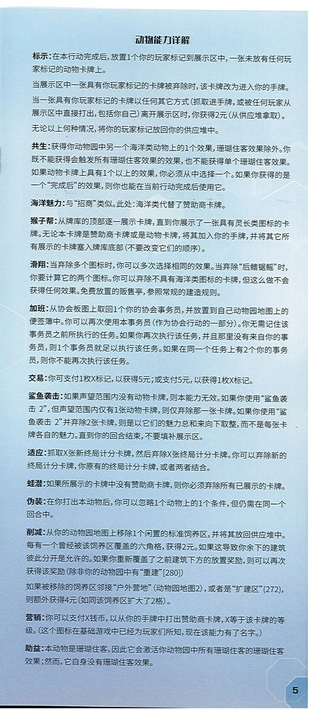
动物能力详解
标示：在本行动完成后，放置1个你的玩家标记到展示区中，一张未放有任何玩家标记的动物卡牌上。
当展示区中一张具有你玩家标记的卡牌被弃除时，该卡牌改为进入你的手牌。
当一张具有你玩家标记的卡牌以任何其它方式（抓取进手牌，或被任何玩家从展示区中直接打出，包括你自己）离开展示区时，你获得2元（从供应堆拿取）。
无论以上何种情况，将你的玩家标记放回你的供应堆中。
共生：获得你动物园中另一个海洋类动物上的1个效果，珊瑚住客效果除外。你既不能获得会触发所有珊瑚住客效果的效果，也不能获得单个珊瑚住客效果。如果动物卡牌上具有1个以上的效果，你必须从中选择一个。如果你获得的是一个"完成后"的效果，则你也能在当前行动完成后使用它。
海洋魅力：与"招商"类似。此处：海洋类代替了赞助商卡牌。
猴子帮：从牌库的顶部逐一展示卡牌，直到你展示了一张具有灵长类图标的卡牌。无论本卡牌是赞助商卡牌或是动物卡牌，将其加入你的手牌，并将其它所有展示的卡牌塞入牌库底部（不要改变它们的顺序）。
滑翔：当弃除多个图标时，你可以多次选择相同的效果。当弃除"后鳍锯鳐"时，你要计算它的两个图标。你可以弃除不具有海洋类图标的卡牌，但这么做不会获得任何效果。免费放置的贩售亭，参照常规的建造规则。
加班：从协会板图上取回1个你的协会事务员，并放置到自己动物园地图上的便签簿中。你可以再次使用本事务员（作为协会行动的一部分）。你无需记住该事务员之前所执行的任务。如果你再次执行该任务，并且那里没有来自你的事务员，则1个事务员就足以执行该任务。如果在同一个任务上有2个你的事务员，则你不能再次执行该任务。
交易：你可支付1枚X标记，以获得5元；或支付5元，以获得1枚X标记。
鲨鱼袭击：如果声望范围内没有动物卡牌，则本能力无效。如果你使用"鲨鱼袭击 2"，但声望范围内仅有1张动物卡牌，则仅弃除那一张卡牌。如果你使用"鲨鱼袭击 2"并弃除2张卡牌，则是以它们的魅力总和来向下取整，而不是每张卡牌各自的魅力。直到你的回合结束，不要填补展示区。
适应：抓取X张新终局计分卡牌，然后弃除X张终局计分卡牌。你可以弃除新的终局计分卡牌，你原有的终局计分卡牌，或者两者结合。
蛙潜：如果所展示的卡牌中没有赞助商卡牌，则你必须弃除所有已展示的卡牌。
伪装：在你打出本动物后，你可以忽略1个动物上的1个条件，但仍需在同一个回合中。
削减：从你的动物园地图上移除1个闲置的标准饲养区，并将其放回供应堆中。每有一个曾经被该饲养区覆盖的六角格，获得2元。如果这导致你余下的建筑彼此分开是允许的。如果你重新覆盖了之前建筑下方的放置奖励，则可以再次获得该奖励（除非你的动物园中有"重建"[280]）
如果被移除的饲养区邻接"户外营地"（动物园地图2），或者是"扩建区"(272），则额外获得4元（如同该饲养区扩大了2格）。
营销：你可以支付X钱币，以从你的手牌中打出赞助商卡牌，X等于该卡牌的等级。（这个图标在基础游戏中已经为玩家们所知，现在该能力有了名字。）
助益：本动物是珊瑚住客，因此它会激活你动物园中所有珊瑚住客的珊瑚住客效果；然而，它自身没有珊瑚住客效果。
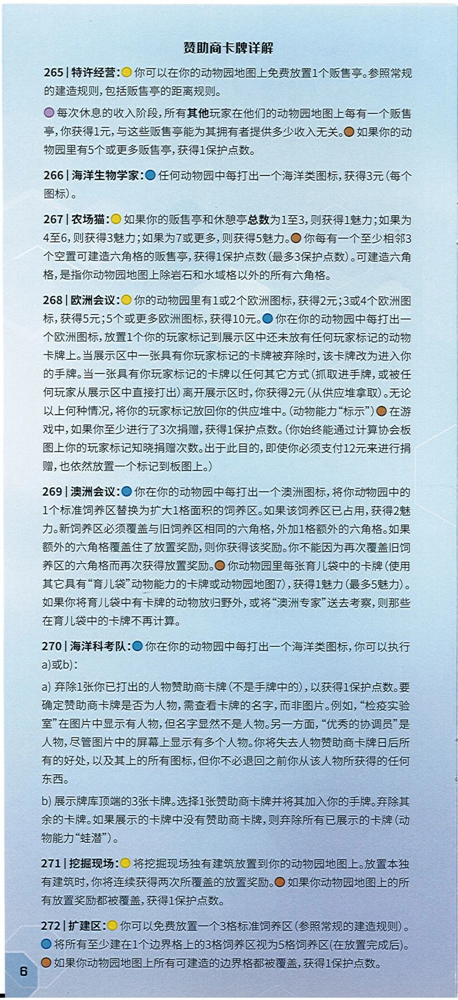
赞助商卡牌详解
（原文各条目前印有彩色能力图标圆点，转录中以〔黄〕〔蓝〕〔橙〕〔紫〕标注其颜色。）
265｜特许经营：〔黄〕你可以在你的动物园地图上免费放置1个贩售亭。参照常规的建造规则，包括贩售亭的距离规则。
〔紫〕每次休息的收入阶段，所有其他玩家在他们的动物园地图上每有一个贩售亭，你获得1元，与这些贩售亭能为其拥有者提供多少收入无关。〔橙〕如果你的动物园里有5个或更多贩售亭，获得1保护点数。
266｜海洋生物学家：〔蓝〕任何动物园中每打出一个海洋类图标，获得3元（每个图标）。
267｜农场猫：〔黄〕如果你的贩售亭和休憩亭总数为1至3，则获得1魅力；如果为4至6，则获得3魅力；如果为7或更多，则获得5魅力。〔橙〕你每有一个至少相邻3个空置可建造六角格的贩售亭，获得1保护点数（最多3保护点数）。可建造六角格，是指你动物园地图上除岩石和水域格以外的所有六角格。
268｜欧洲会议：〔黄〕你的动物园里有1或2个欧洲图标，获得2元；3或4个欧洲图标，获得5元；5个或更多欧洲图标，获得10元。〔蓝〕你在你的动物园中每打出一个欧洲图标，放置1个你的玩家标记到展示区中还未放有任何玩家标记的动物卡牌上。当展示区中一张具有你玩家标记的卡牌被弃除时，该卡牌改为进入你的手牌。当一张具有你玩家标记的卡牌以任何其它方式（抓取进手牌，或被任何玩家从展示区中直接打出）离开展示区时，你获得2元（从供应堆拿取）。无论以上何种情况，将你的玩家标记放回你的供应堆中。（动物能力"标示"）〔橙〕在游戏中，如果你至少进行了3次捐赠，获得1保护点数。（你始终能通过计算协会板图上你的玩家标记知晓捐赠次数。出于此目的，即使你必须支付12元来进行捐赠，也依然放置一个标记到板图上。）
269｜澳洲会议：〔蓝〕你在你的动物园中每打出一个澳洲图标，将你动物园中的1个标准饲养区替换为扩大1格面积的饲养区。如果该饲养区已占用，获得2魅力。新饲养区必须覆盖与旧饲养区相同的六角格，外加1格额外的六角格。如果额外的六角格覆盖住了放置奖励，则你获得该奖励。你不能因为再次覆盖旧饲养区的六角格而再次获得放置奖励。〔橙〕你动物园里每张育儿袋中的卡牌（使用其它具有"育儿袋"动物能力的卡牌或动物园地图7），获得1魅力（最多5魅力）。如果你将育儿袋中有卡牌的动物放归野外，或将"澳洲专家"送去考察，则那些在育儿袋中的卡牌不再计算。
270｜海洋科考队：〔蓝〕你在你的动物园中每打出一个海洋类图标，你可以执行a）或b）：
a) 弃除1张你已打出的人物赞助商卡牌（不是手牌中的），以获得1保护点数。要确定赞助商卡牌是否为人物，需查看卡牌的名字，而非图片。例如，"检疫实验室"在图片中显示有人物，但名字显然不是人物。另一方面，"优秀的协调员"是人物，尽管图片中的屏幕上显示有多个人物。你将失去人物赞助商卡牌日后所有的好处，以及其上的所有图标，但你不必退回之前你从该人物所获得的任何东西。
b) 展示牌库顶端的3张卡牌。选择1张赞助商卡牌并将其加入你的手牌。弃除其余的卡牌。如果展示的卡牌中没有赞助商卡牌，则弃除所有已展示的卡牌（动物能力"蛙潜"）。
271｜挖掘现场：〔黄〕将挖掘现场独有建筑放置到你的动物园地图上。放置本独有建筑时，你将连续获得两次所覆盖的放置奖励。〔橙〕如果你动物园地图上的所有放置奖励都被覆盖，获得1保护点数。
272｜扩建区：〔黄〕你可以免费放置一个3格标准饲养区（参照常规的建造规则）。〔蓝〕将所有至少建在1个边界格上的3格饲养区视为5格饲养区（在放置完成后）。〔橙〕如果你动物园地图上所有可建造的边界格都被覆盖，获得1保护点数。
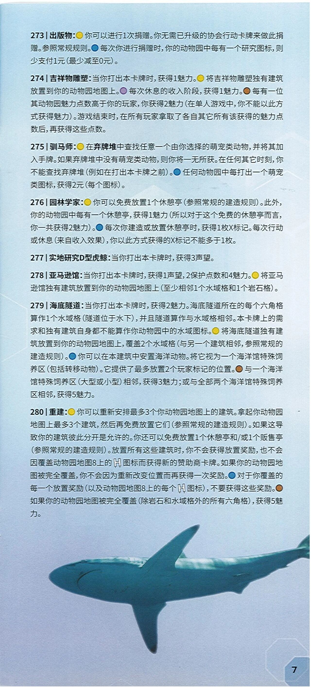
273|出版物：〔黄点〕你可以进行1次捐赠。你无需已升级的协会行动卡牌来做此捐赠。参照常规规则。〔蓝点〕每次你进行捐赠时，你的动物园中每有一个研究图标，则少支付1元（最少减至0元）。
274|吉祥物雕塑：当你打出本卡牌时，获得1魅力。〔黄点〕将吉祥物雕塑独有建筑放置到你的动物园地图上。〔紫点〕每次休息的收入阶段，获得1魅力。〔棕点〕每有一位其动物园魅力点数高于你的玩家，你获得2魅力（在单人游戏中，你不能以此方式获得魅力）。游戏结束时，在所有玩家拿取了各自其它所有该获得的魅力点数后，再获得这些点数。
275|驯马师：〔黄点〕在弃牌堆中查找任意一个由你选择的萌宠类动物，并将其加入手牌。如果弃牌堆中没有萌宠类动物，则你将一无所获。在任何其它时刻，你不能查找弃牌堆（例如在打出本卡牌之前）。〔蓝点〕任何动物园中每打出一个萌宠类图标，获得2元（每个图标）。
276|园林学家：〔黄点〕你可以免费放置1个休憩亭（参照常规的建造规则）。此外，你的动物园中每有一个休憩亭，获得1魅力（所以对于这个免费的休憩亭而言，你一共获得2魅力）。〔蓝点〕每次你建造或放置休憩亭时，获得1枚X标记。每次行动或休息（来自收入效果），你以此方式获得的X标记不能多于1枚。
277|实地研究D型虎鲸：当你打出本卡牌时，获得3声望。
278|亚马逊馆：当你打出本卡牌时，获得1声望，2保护点数和4魅力。〔黄点〕将亚马逊馆独有建筑放置到你的动物园地图上（至少相邻1个水域格和1个岩石格）。
279|海底隧道：当你打出本卡牌时，获得2魅力。海底隧道所在的每个六角格算作1个水域格（隧道位于水下），并且隧道算作与水域格相邻。本卡牌上的需求和独有建筑自身都不能算作你动物园中的水域图标。〔黄点〕将海底隧道独有建筑放置到你的动物园地图上，覆盖2个水域格（与另一个建筑相邻，参照常规的建造规则）。〔蓝点〕你可以在本建筑中安置海洋动物。将它视为一个海洋馆特殊饲养区（包括转移动物）。它提供了最多放置2个玩家标记的位置。〔棕点〕与一个海洋馆特殊饲养区（大型或小型）相邻，获得3魅力;或与全部两个海洋馆特殊饲养区相邻，获得5魅力。
280|重建：〔黄点〕你可以重新安排最多3个你动物园地图上的建筑。拿起你动物园地图上最多3个建筑，然后再免费放置它们（参照常规的建造规则）。如果这导致你的建筑彼此分开是允许的。〔原文如此〕你还可以免费放置1个休憩亭和/或1个贩售亭（参照常规的建造规则）。放置所有这些建筑时，你不会获得放置奖励，也不会因覆盖动物园地图8上的〔图标：方框内"H"字样〕图标而获得新的赞助商卡牌。如果你的动物园地图被完全覆盖，你不会因为重新改变位置而再获得一次奖励。〔蓝点〕对于你覆盖的每一个放置奖励（以及动物园地图8上的每个〔图标：方框内"H"字样〕图标），不要获得这些奖励。〔棕点〕如果你的动物园地图被完全覆盖（除岩石和水域格外的所有六角格），获得5魅力。
〔图 页面下半部为一只鲨鱼在水中游动的实拍照片，水体呈深蓝色。〕
（页面右下角印有页码：7）
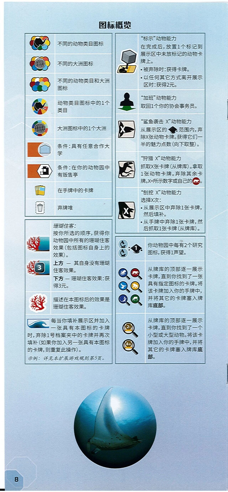
图标概览
（左栏表格）
- 〔图 黑白象头剪影，周围环绕多枚彩色圆形图标〕 不同的动物类目图标
- 〔图 黑白地球仪图案，周围环绕多枚彩色圆形图标〕 不同的大洲图标
- 〔图 多枚彩色圆形图标组合，无中心图案〕 不同的动物类目和大洲图标
- 〔图 彩色扇形圆环，中心为象头剪影〕 动物类目图标中的1个类目
- 〔图 彩色扇形圆环，中心为地球仪图案〕 大洲图标中的1个大洲
- 〔图 橙色方块与白色圆形，内为浅蓝色大学建筑图案〕 条件：具有任意合作大学
- 〔图 橙色方块与白色六边形，内为黑色贩售亭图案〕 条件：在你的动物园中有贩售亭
- 〔图 数张黄色卡牌叠放〕 在手牌中的卡牌
- 〔图 黑色垃圾桶图案，外有虚线方框〕 弃牌堆
（左栏下方表格）
- 〔图 红色珊瑚，背景为蓝绿色海水〕 珊瑚住客： 按你所选的顺序，获得你动物园中所有的珊瑚住客效果（包括图标自身上的效果）。
- 〔图 红色珊瑚，右下有深色圆角方块，内印数字"3"〕 上方 — 其自身没有珊瑚住客效果。下方 — 珊瑚住客效果：获得3元。
- 〔图 红色珊瑚，白色云朵状底〕 描述在本图标后的效果是珊瑚住客效果。
- 〔图 蓝色海浪图案〕 每当你填补展示区并加入一张具有本图标的卡牌时，弃除1号档案夹中的卡牌并再次填补（如果你加入另一张具有本图标的卡牌，则重复此操作）。
示例： 详见本扩展游戏规则第5页。
（右栏表格）
- 〔图 灰色立方体标记压在一张黄色卡牌上〕 "标示"动物能力 在完成后，放置1个标记到展示区中未放标记的动物卡牌上。 •被弃除时：获得卡牌。 •以任何其它方式离开展示区时：获得2元。
- 〔图 黑色人形剪影，下方有绿色箭头底座〕 "加班"动物能力 取回1个你的协会事务员。
- 〔图 白色卡牌形图标，内有黑色鲨鱼与字母"X"〕 "鲨鱼袭击 X"动物能力 从展示区的〔图标：黑色小立方体标记〕范围内，弃除X张动物卡牌。获得它们一半的魅力点数（向下取整）。
- 〔图 白色卡牌形图标，内有黑色兽脚类恐龙剪影〕 "狩猎 X"动物能力 抓取X张卡牌（从牌库）。拿取1张动物卡牌。弃除其余卡牌。X=所示数字或自己的〔图标：暗红色圆形，内为白色熊形图案〕。
- 〔图 白色卡牌形图标，内有黑色动物低头刨地剪影与字母"X"〕 "刨挖 X"动物能力 选择X次： •从展示区中弃除1张卡牌，然后填补。 •从手牌中弃除1张卡牌，然后抓取1张卡牌（从牌库）。
- 〔图 两枚显微镜图标与一枚黑色博士帽图标，内有数字"1"，中间以冒号相连〕 你动物园中每有2个研究图标，获得1声望。
- 〔图 六枚放大镜图标，镜片内分别为：深蓝底白色章鱼、暗红底白色熊、浅蓝底白色飞鸟、黄底白色猿猴、深蓝底白色蜥蜴、绿底白色鹿科动物〕 从牌库的顶部逐一展示卡牌，直到你找到了一张具有指定图标的卡牌。将该卡牌加入你的手牌中，并将其它的卡牌塞入牌库底部。
- 〔图 两枚放大镜图标，镜片内为棕色六角形图案，分别印"2-"和"4+"〕 从牌库的顶部逐一展示卡牌，直到你找到了一个小型或大型动物。将该卡牌加入你的手牌中，并将其它的卡牌塞入牌库底部。
〔图 页面下部居中为一幅圆形水下照片，一只蝠鲼（魔鬼鱼）在深蓝色海中游动，上方有透入水面的阳光。〕
（页面左下角八角形框内印有页码：8）